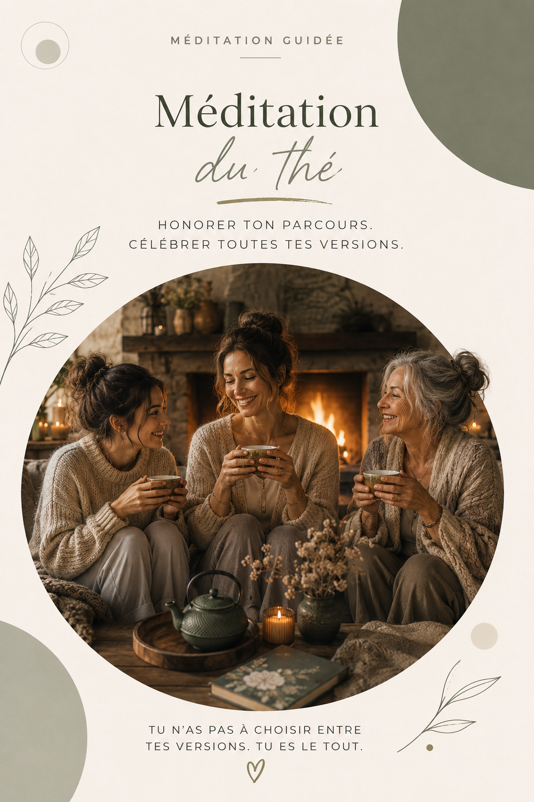

Cette méditation guidée vous accompagne pour ralentir, revenir au présent et envoyer un signal de sécurité à votre système nerveux.
Télécharger la méditation du théInstallez-vous au calme, préparez une boisson chaude si vous le souhaitez, puis laissez-vous guider.
Tu n'as pas à choisir entre tes versions. Tu es le tout.